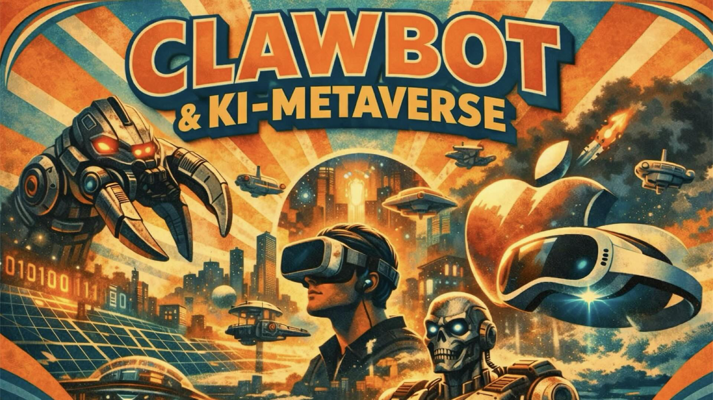

State of 26: KI-Clawbot-News, Metaverse- & Apple-News, Ep. 93


Bild: KINach einer längeren Pause sind Kai Heddergott und Gerhard Schröder wieder zurück mit der nun 93. Folge des Visual Com-Podcasts auf YouTube.
Inhaltsübersicht
Gerhard Schröder und Kai Heddergott melden sich nach einer Pause mit Folge 93 zurück und blicken auf die KI- und Tech-Entwicklungen zum Jahresbeginn 2026. Ein zentrales Thema ist die strategische Bedeutung von Apples KI-Entscheidungen: von der Einbindung von Googles Gemini-Modell in Siri bis zur wachsenden Attraktivität der Mac-Hardware für lokale KI-Anwendungen – vier gestapelte Mac Minis reichen inzwischen, um leistungsfähige Open-Source-Modelle lokal zu betreiben. Am Beispiel des Projekts OpenClaw diskutieren die beiden die Kehrseite dieser Demokratisierung: wenn KI-Agenten mit offenen Schnittstellen und ohne ausgereifte Sicherheitsstandards in Umlauf kommen, entstehen reale Risiken – ein Thema, das auch durch die EU-Produkthaftungsrichtlinie 2024 an Brisanz gewinnt.
Die Debatte um digitale Souveränität zieht sich als roter Faden durch die Folge: Microsoft 365 mit Copilot, der Abschied von US-Diensten wie Dropbox und Zoom, und die Frage, welche Alternativen für Unternehmen und Privatpersonen realistisch sind. Zum Schluss wagen Gerhard und Kai einen Ausblick auf Apples Vision Pro, die Stille-Schnittstelle durch Lippenlesen, und das Potenzial von OpenUSD als dezentrales Fundament eines offenen Metaverse – und kündigen für 2026 einen regelmäßigeren Veröffentlichungsrhythmus an.
Am Ende wurde auch direkt die nächste Live-Ausgabe schon angekündigt: 4. März um 19:00 Uhr. Events dazu in den nächsten Tagen auf LinkedIn und YouTube.
Update 11. Februar
→ Neu: Audio-Abo (RSS)
→ Nächste Folge: Live auf YouTube
→ Nächste Folge: Live auf LinkedIn
Embed: https://www.youtube.com/watch?v=z7JQmfuwrHA
Transkript (KI)
und herzlich willkommen zu einer neuen Folge von Visual.com, dem Podcast von und mit Kai Heddergott und Gerhard Schröder.
Ja, nach einer kleinen Pause sind wir wieder am Start und wir haben eine größere Runde auch an Themen für den heutigen Tag als kleine Runde als Blumustraus vorbereitet, wobei die Themen verzahnen sich auch sehr gut ineinander. Alles was Hausmitteilung angeht, also Stiefwort und Pause, wie es weitergeht und Ähnliches, möchten wir gerne an den Ende des Livestreams legen.
Was uns dazu führt, dass Kai ein Hintergrundbild hat, das ist mit Kai generiert.
Ich zeige das, was ich normalerweise in meiner kleinen Ecke, in der ich sitze, wenn wir hier live drauf sind, auch zum besten gebe, mein Alter Mac Plus, mein 64er, mein Newton, mein Gameboy, alles Mögliche.
Aber es hat sich über die Weihnachtsfeier-Tage etwas ergeben, dass ich noch mal ein etwas älteres Schätzchen für die Familie aufgebaut habe, eine Lego-Eisenbahn. Und hier steht jetzt in dem Bereich, wo wir normalerweise Kamera, Mikro und so weiter stünden. Und deswegen habe ich mich dann dazu entschlossen, das Ganze mal mit der generativen Kai in bestimmten Formen nachzuahmen. Also für diejenigen, die das hören, die haben eben gehört, was da in einem klassischen Regal, skandinavischer Art, Stil der 60er, zu sehen ist. Aber das ist auch ein kleiner Verweis, generative Kai auf Themen, die wir heute auch besprechen, oder Gelt? Auf jeden Fall. Darum habe ich das so als gelandte Überleitung genommen. Bei mir ist es real unaufgeräumt. Du konntest per Prompt bestimmen, wie schön es aussehen soll.
Ja, wir haben nämlich Anfang 2026 und da geben sich so verschiedene Themen, die zu dem passen, was wir immer schon besprochen haben. Wo es Aktualitäten zu gibt, auf die wir eingehen. Und wir gucken natürlich in unsere, ich weiß gar nicht, ob sie klar oder mächig ist, unsere Kristallkugel, was dann so die Themen sein werden. Und haben hinten raus dadurch auch einen schönen Übergang zu unseren Hausmitteilungen, was wir dieses Jahr noch vorhaben. Weil das können wir jetzt schon sagen, wir organisieren das Ganze ein bisschen anders auch von der Produktion, damit ihr aber wie gewohnt dann wieder in einem bestimmten Takt unsere Episoden wahrnehmen könnt. Genau. Stichwort Apple. Stichwort Apple, genau. Hat ja schon Tradition bei uns. Das war auch normalerweise uns Gäste wie Thomas Riedl oder Sascha Peinberg dazuholen, wenn gerade eine Apple-Kinot angestanden hat. Oder wie natürlich alle davon wussten und wir dann geguckt haben, was gab es denn dann Neues.
So, jetzt haben wir heute die Aufzeichnung ist zweite richtige Arbeitswoche im Februar. Und da kann man sich so überlegen, was ist denn das nächste Thema bei Apple? Da lesen wir dann so bei TechCrunch oder bei Bloomberg, dass wohl in der zweiten Februarwoche eine etwas überraschende Apple-Kinot droit.
Kai, Versprecher, zweiten Februar Hälfte. Danke, ich habe Woche gesagt. Ja, weil hatten wir im Vorgespräch auch schon nicht so, 2. Februar Woche. Kai, das ist doch heute… Niemand hier bitte auf die falsche 4. Folge. Also wir haben kein konkretes Datum, um so wichtig als zu sagen 2. Februar Woche. So ähnlich wie die Startverschiebung bei der NASA mit der Artemis II Mission. Andres Thema.
Genau, es ergeben sich noch Fernsehkeiten. Man hört, es hat wohl damit zu tun, dass es vielleicht was Neues zu erzählen gibt, was sich aus Siri nun langsam mal weiter entwickelt. Weil das ist allerdings safe, die Kooperation zwischen Apple und Google sich ergeben hat, dass man wohl bei Apple das KI-Modell namens Gemini, einige sagen, sich dann wohl ins Haus geholt hat. Was sagen wir dazu, Gerd? Was hast du dazu wahrgenommen? Wie sollte man darüber sprechen?
Ich würde jetzt ein bisschen betrachten, im Sinne von, wer die Oberfläche kontrolliert, kontrolliert die Kunden. Was ich damit meine ist, wir erinnern uns vielleicht ein bisschen zurück damals, als das iPad noch neu war. War auf dem iPad, YouTube und Google Maps, so gesehen 2 Standard Dinge, die einfach so drauf waren. Weil Apple damals noch gar kein Apple Maps hatte. Das heißt, es war eine Google Maps App, das war ja nur so. Jetzt ist es aber anders.
Also später kam dann mal Apple Maps raus. Aber es haben sicherlich nicht alle Menschen den Wandel von Google Maps dann später zu Apple Maps vollzogen. Jetzt haben wir eine andere Situation. Wir haben jetzt eine Situation, wo seit gefühlt 10 Jahren Siri als Interface, als Spracheingabe in meinem Auto, auf meinem Handy, wo auch immer entsprechend funktioniert.
Und ich vermute, auch in Zukunft wird Siri mit der Siri-Stimme sprechen, die man ja auch noch jeweils auswählen kann.
Und welches KI-Modell hinter dieser Spracheingabe Interface sich dahinter verbirgt, wie schlau oder dumm, oder was auch immer das jeweils dann ist, ist am Ende egal. Und ob das nach 1 oder X Jahren, so ähnlich wie Google Maps und Apple Maps, dann irgendwann von Apple wiederum dann ersetzt wird, weil sie dann doch auf Basis ihres Foundation Modells ihre eigene KI-Modelle sagen, wir haben jetzt, was das ausreichend gut ist, dass sie alles nicht definiert.
Und zwischenzeitlich hat sich auch noch was anderes ergeben.
Ich beschäftige mich ja damit, Menschen ein bisschen näher zu bringen, wie KI funktioniert, wie es sich implementieren lässt, oder wie man vielleicht mit so einer Question-Funktion, namens KI-Manager, KI-Managerinnen, Unternehmen hilft, das Thema zu fassen. Und dann gucken wir uns ja mal an, wie vermitteln wir denn so den aktuellen Stand auch der Angebote der generativen KI. Und gucken wir mal, was verdichten sich so an Entwicklungslinien. Und eine Linie ist ganz deutlich, dass die Anbieter zunehmend auf ein Blumstrauß in ihrem Angebot verfügbaren KI-Modellen auch von gefühlt der Konkurrenz nicht nur verweisen, sondern sie so einbauen. Nehmen wir mal Adobe mit ihrem KI-Engine, wenn man so will, Firefly. Wenn ich Adobe Firefly aufrufe in der Web-Version, dann kann ich beim Generieren der Bild-Inhalte und auch Video-Inhalte KI-Modelle auswählen. Das von Flux, das ist allerdings auch ein Open Source-Modell, aber ich kann auch das von ChatGPT, also von OpenAI auswählen. Ich kann das Bild-Modell von Google auswählen bei Adobe. Und das gehört aber dann zum Produktangebot. Also tatsächlich verändert sich so ein bisschen das, alles muss aus einem Hause kommen, sondern es geht eher Richtung die Tools können das. Und für die jeweiligen Aufgaben kann ich dann beim aktiven Generieren mir ein Modell sogar auswählen, weil da gibt es dann Kooperationen. Und die sind gar nicht mehr so über wie früher. Wobei, glaube ich, die Kooperation bei dem Flaggschiff Anwendung, Interaktionsanwendung namens Siri bei Apple ist nochmal, glaube ich, eine leicht andere Tasse T aus der strategischen Sicht. Aber es ist mittlerweile normal geworden, nicht zu gucken, welches KI-Angebot taugt für eine Aufgabenstellung, sondern welches Modell sollte man verwenden.
Naja, und vielleicht ist es da Apple sogar ganz gut auf die Füße gefallen, dass das mit Siri ein bisschen länger gedauert hat und sich jetzt so gesehen andere strategische Rahmenbedingungen ergeben haben, dass das vielleicht nicht mehr so ganz gefühlt der Glaubwürdigkeit von Apple, wir machen alles selbst, wirklich, dass daraus einen Schaden entsteht. Vielleicht muss das gar nicht mehr so sein.
Vor allen Dingen jetzt mal vor dem Hintergrund, das einerseits gesehen die ganzen letzten vier, fünf Jahre, also wo das Thema ja schon richtig eigentlich so Fahrt aufgenommen hat, bis wir es mal wahrgenommen haben, immer mehr der Trend geht zu noch größeren, noch größeren, noch größeren Modellen.
Und gleichzeitig, wir haben jetzt aber auch an den Punkt angekommen, dass wir sagen, der Belong ist so groß geworden, der Mächtigkeit eines Modells, dass irgendwer gesagt hat, können wir da mal wieder Luft rauslassen. Und jetzt so gesehen, erstens diese Großmodelle ist in einer geschrumpften Form, ich möchte jetzt nicht von Schrumpfköpfen sprechen, aber sowieso wie Bild und JPEG.
Alles wichtigen Informationen sind trotzdem drin und trotzdem kriegst du in der kleinere Datei und diese kleineren geschrumpften Modelle kann ich wieder lokal auf Geräten und Device auch schon laufen lassen.
Und das wiederum spielt natürlich im Ende Apple auch gerade in der Hand. Also jetzt ganz kurz Exkurs für alle, die es nicht wissen, für die meisten KI-Geschichten, das läuft auf Nvidia-Grafikarten, nicht alles, aber ganz viel läuft auf Nvidia-Grafikarten, was damit dazu führt, dass Nvidia auch gerade an der Bäuse ganz gut dasteht und aktuell die Telekom-Cloud, die in München mit KI-Geschichten aufgebaut wird, auch alles auf Nvidia-Ships läuft.
Parallel, dazu gibt es eben jetzt die Möglichkeit mit kleineren Modellen auch zu sagen, ich muss nicht mehr ein Modell in der Cloud betreiben, sondern Turns out, vor Gefühl zwei Monaten hat Apple eine kleine PR-Kampagne gemacht. Die haben ungefähr zehn oder zwanzig YouTubern ein Paket zugeschickt, in dem waren vier Mac Mini drin, weil Apple hat mich dann eine softwares-seitige Betriebssysteme, eine Schnittstelle freigeschaltet, die die ganze Zeit hat, der technisch schon da war, aber diese nicht ausentwickelt haben, sag ich mal. So was da damit nicht möglich war ist zu sagen, ich nehme vier Mac Mini, die sind nicht groß, die sind nicht teuer, stapel die einfach aufeinander, stecke die hinten alle zusammen und kann lokal, so gesehen hier auf meinem Schraktisch auch richtig vette KI-Modelle, die kondensierten aber davon die großen, also richtig mächtige Geschichten lokal auf meinen eigenen Maschinen laufen lassen. Das heißt selbst ein kleines Unternehmen kann mit vertretbaren Mitteln sagen, ich stelle mir vier Mac Mini hin, klar, die sind die Modelle, die auch schon entsprechend jeweils was Hauptspeicher angeht, die geek Variante sein sollen, okay aber, wenn man sich die ganze Kosten von dem ganzen Kram zusammenrechnet und jetzt beruhigt, was die aktuellen Speicherpreise für einen klassischen Windows PC sind mit so einer Nvidia Grafikate, da rechnet sich mit einmal der Apple KI lokal.
Wobei ich natürlich jetzt als derjenige, der das Thema dann auch lehrt im KI-Management nochmal einige Details hin nochmal mit dem Schraubenzieher nachschärfen muss. Aber der Trend ist komplett richtig beschrieben. Wir haben gleich noch ein nächstes Thema, wo sich das für Apple, das was du gerade beschreibt, beschreibt, mir beschrieben hast, auch nochmal am Hardwaremarkt positiv auswirkt hat auch mit den Mac Mini zu tun. Also A, die Grafikkarten braucht man im ersten Schritt, die vielen nebeneinander geschalteten für das Trainieren von Modellen gar nicht mal so unter Umständen für das Betreiben von größeren KI-Clauts, da werden die dann für einige Rechnoperation natürlich immer noch benutzt, aber diese massiven Geschichten, dass man da in einer fünfstelligen Zahl Grafikkarten einkauft und gleichzeitig benutzt, ist dann vor allem für die Trainingszwecke wichtig, weil da geht es dann über Monate hin, dass man diese großen Modelle aufbaut, die dann schon eine dreistellige Milliarde betrachtet. Und da kann man dann auch ein paar Meter in der Zeit haben, damit wir nachher alles daraus holen können.
Das warst du weg, jetzt bist du wieder da. Ich bin wieder da. Okay, was die Telekom jetzt gerade gemacht hat, ist in München im Prinzip ein großer, das sind dann die PR-Begriffe, eine KI-Fabrik aufgebaut. Eigentlich ist das ein Datacenter, was in der Lage ist, KI-Modelle zu trainieren oder auch KI-Anwendung später zu fahren.
Das ist eine Rechnoperation mit NVIDIA, dem Hersteller von Grafikk-Chips, weil Grafikk-Chips sind besser in der Lage, sehr schnell parallel auszuführende Rechnoperation zu händeln. Fünftellige Zahl von NVIDIA-Chips beschafft und dort verbaut, war eben der Startschuss letzte Woche, dass das in München aufgebaut wird. In Europa, just saying, zwar ein klassischer Hersteller von den entsprechenden Chips, aber in Europa aufgebaut. Und das, was du mit den 4-Max beschrieben hast, das haben die Kollegen vom Heise-Verlag, glaube ich schon Ende 2025, war ein Interaktiv-Oppel. Korrekt, also es gab jetzt nur eine gezielte Aktion von US, weil jetzt ist die Schnittstelle und es hat jemand eine Open-Source-Software jetzt entwickelt, nach Moto 4 Max eine Software installieren und okay, das ist nicht ganz ohne, aber ab dann, der größte Teil geht dann schon ziemlich von selbst. Das ist nicht mehr Experimentierphase oder für die ganz harte Merkzung, das ist wirklich der Punkt. Dank der schnellen Thunderbolt-Schnittstellen ist das auch gut möglich und einfach möglich, die zu verdrahten. Wir werden euch in den Schonnotenmal von den Kollegen vom Heise-Verlag, der jetzt einen Kollegen, der auf seinem YouTube-Kanal das App explizit erläutert hat, wie man die Dinger verdrahtet, da muss man ja auch eine Reihenfolge einhalten.
Das hat sich auch gezeigt, es ist dann entscheidend, was für ein Hauptspeicher, also wie viel RAM du dem Gerät günst, von Haus aus muss man das ja bestätten bei Apple, leider Gottes, erst recht bei dem Mini, Mini, Mini, Mini, den wir mittlerweile haben, ist alles fertig. Ja, aber wenn ich mir die aktuelle Hauptspeicher-Entwicklung auf Windows-Seite anschaue, sind die Apple-Rechner jetzt schon wieder günstiger, obwohl ich meine, die Apothekenpreise von Apple sind günstiger als der Rest. Das ist bemerkenswert. Worauf ich nur in der Ausbildung bin, man sollte sich dann eben nur in 24 Gb Rechner holen, sondern 48, 64 und besser noch 96, weil das zeitlich das Abarbeiten von Open-Source-KI-Modellen, die man auf seinen Rechner runterlädt, um sie lokal zu benutzen, die performen in dem Moment besser, in dem im Hauptspeicher die Daten berechnet, bewegt und so weiter werden. Natürlich ist dann auch noch vor Ort der Prozessor oder die Grafikkarte in den Berechnungsmomenten auch noch wichtig. Aber da sollte man nicht dran sparen. Und wenn man die länger dann gut ausgestattet verknüpft, dann fährt man, also für Textzwecke sowieso schon konkurrenzfähige Anwendung lokal. Und es zeigt sich, dass bei Bild, absehbar auch bei Video, das dann auch wirklich lokal laufen kann. Dann waren einige Datenschutzthemen echt gut abgeräumt, sehr fix.
Die Frage nach dem Energieverbrauch auf den Leistungsstieg und den Wasserverbrauch drüben in Kalifornien kommt auch auf ein anderes Maß runter. Natürlich verbrauchen die einzelnen Rechner dann mehr Strom als in der Normallast.
Aber wir reden von einer maximal gedeckelten Wattzahl, die dann pro Rechner verbraucht wird.
Es zeigt sich alles auf jeden Fall besser und es ist bei uns. Und die KI-Modelle, die dann als Open Source zur Verfügung stellen, das sind welche, die sind auf der Leistungsklasse Ebene der Modelle, die wir in der Regel über irgendein Abo-Modell auf unserem Browser, auf unserem Rechner aufrufen. Das lässt sich nicht wirklich ganz vergleichen, aber das ist nicht nur eine Nördlösung für irgendwelche Spezialanwendung, das kann im Alltag angewendet werden.
Also, da hat sich innerhalb von einem Jahr was getan.
So, jetzt kommt ja die Frage, gibt es denn eine aktuelle Open Source Anwendung, Gerd, von der man gehört hat, dass er sich innerhalb von ein, zwei Wochen verbreitet und sogar umbenannt hat, die man auch lokal benutzen kann? Sie sich innerhalb von einer Woche mehrfach umbenannt hat oder innerhalb von einer halben Woche ein Jahr.
Wir überspringen da jetzt ein Thema, da kommen wir nachher noch mal zurück, aber schwamm drüber. Aber deswegen haben wir jetzt wieder diese Rechner angeschafft. Ja, ja, ja.
Apple-Freud, also ich meine Nvidia ist gut vorne und Apple-Freud, das Sie so gesehen auf dieser Welle, die Sie strategisch ja mit vorbereitet haben, ganz gut glaube ich jetzt mitarbeiten können. Bevor ich aber auf Chlor, Book und ähnliches eingehe, ganz kurz noch zum Thema Mac und Apple.
Apple bringt ja dieses Jahr noch einen neuen Mac Studio raus.
Also, wir haben das Mac Mini, ist der kleine, kleine Klotz und es gibt den auch in Höhe. Ja, das ist dann der Mac Studio, kostet ein großer Chip drin, also ein bisschen mehr Dampf unter der Haube, hat oben auch einen großen Kühlkörper drauf, kostet auch ein paar Tausend Euro mehr. Den soll es dieses Jahr in einer Variante der Gerüchte Wolke nach in Größenordnung wieder auch als Macs geben, also auch als gestapelten Chip.
Und wenn ich mir dann die Kiste anschaube und die Mac Studios auch mit dieser Schnittstelle, Standard-Bau-Schnittstelle von eben, auch in Fira-Paket zusammengeschaltet werden können, dann schlackern dem eine oder anderen generell, was Rechenleistungen angeht, so gesehen auf dem eigenen Schreibtisch in Form eines solchen Turms, die Ohren. Und das führt mich ganz kurz noch zu dem Thema, was ist eigentlich mit dem Mac Pro? Könnte es sein, weil der Mac Pro hat so ein großes, sorry, Netzteil drin, das eigentlich von den ganzen M1s nicht ausgerietzt werden kann. Da ist glaube ich ein 1500, 1600 Watt Netzteil drin. Weil das ist ja noch auf Intel-Technologie mit alten Grafikkarten.
Was wäre, wenn es von Apple, ich jetzt mal Wunschdenken gebe ich dazu, wenn Apple sagt, wir bringen einen Umrusskit raus, du nimmst deine Intel Grafikkarten, also deine ganze Intel Architektur, die Hauptplatine, nimmst du raus, packst eine neue Hauptplatine mit 4 von diesen M5 Chips, gesehen in Paketsam geschaltet, rein und bis Rechenleistungsmäßig um Faktor geführt, 10 schneller als die alte Maschine. Das alles erinnert mich jetzt nochmal heise an die Zeiten, als wir Transputer hatten.
Ja, auf allem an die Zeiten, wo dieser Begriff fast quasi Wirklichkeit war, weil man die Maschine aufrüsten konnte.
Also ich weiß noch, dass es dann so wirklich so Ergänzungsplatins-Set gab, die aus dem Rechner was ganz anderes machten. Also bei Apple gab es dann auch so eine Geschichte, du hast dann eine Platine gehabt und baust den Mindowsrechner auf dein Mac oben drauf, also ein Leistungsfähigen. Das fühlte sich aber auch nicht ganz so klasse an.
Ich nehme mal jetzt mal den alten, mein Gott, dieser Power Mac 9500, dieser Riesentauer, der so viele Steckplätze hatte, dass du mit dem Gerät nach einer Investitionssicherheit hattest, weil du für die nächsten, sagen wir mal ehrlich in der Rückschau, 2 bis 4 Jahre noch die Möglichkeit hattest, dem Ding was zu gönnen. Und wenn es nur Hauptspeichersteckplätze waren, damit das Ding dann unglaubliche 128 MB bekommt. Wofür du damals einen Kredit aufnehmen musstest zwischen 6 und 10.000 Mark?
Ich habe da vorne noch eine schwarze Röhre stehen. Manche sagen auch, liebe Freunde, Trashcan. Sie steht seit Jahren auch nur rum. Ja.
Gut, also das hat alles Auswirkungen, diese Veränderung im KI-Mail-Segment auf die Hardware. Und zwar die Hardware, die eben nicht nur eine Expertenhardware ist, sondern die noch rum steht, die kostengünstig verfügbar ist und kombiniert werden kann.
Und in Cupertino durfte man ganz entspannt darauf gucken und sagen, wir haben gefühlt die nächsten 2 Jahre, haben wir glaube ich keine wirkliche Absatzproblematik, weil unsere Maschinen nochmal anders im Kontext kommen.
Absolut. Womit wir jetzt vielleicht nochmal zu deinem Punkt, sorry, wieder auf die gerade einschwenken.
Genau, ich versuche mal kurz zusammenzufassen, um zu schärfst nach. Vor ungefähr 2 Wochen hat ein nicht ganz unbekannte Entwickler gesagt, ich habe mal die letzten Wochen was aus so langer Weile entwickelt und hat gesagt, hier, ich stelle das Ganze mal Open Source. Vorne rein von ihm auch gesagt, im Sinne von, das ist ein Bastelkasten. Das so ähnlich, als wenn du sagst, ich mache einen Elektro-Bastelkasten und die ganzen Drähte da drinnen funktionieren, aber die haben alle keine Isolierung. Also fast nicht die falschen Drähte an. Der Bastelkasten ist für Leute, die wissen, was sie da tun.
Unter der Maßgabe ist das Ganze rausgekommen. Mein Verständnis. Kann man so sagen. Das Ergebnis ist, das haben natürlich ganz viele Hobbybastler im KI-Bereich genommen. Haben das wir eben beschrieben auf ihre lokalen Maschinen gepackt, weil dafür ist es gedacht. Macht dich so gesehen unterwinkig von allen anderen und installiere dir dann deine KI-Modelle, deine Trainingsdaten, packt dir das alles lokal hin, da das aber eben ein großer offener Schraubkasten ist und du diesem Schraubkasten auch sagen kannst, ich gebe dir meine Kreditkartentaten, ich gebe dir meine all meine Passwörter, ich gebe dir meine Handynummer, ich gebe dir alles, was du haben willst. Das ist eben ein Bastelkasten, der recht offen ist.
Komm mal, das Gegenteil von dem, wie Apple arbeiten würde an der Stelle. Großes Ausrufezeichen. Ja, es ist absolut offener Bastelkasten.
Haben viele gesagt, na komm, das machen wir doch mal. Das ist doch das gelobte Land, wenn alles so frei und offen funktioniert.
Die haben dann auch ihre Kreditaten-Daten eingetragen und alles freigegeben, was eben so ging, damit der Rechner frei auf deiner Maschine, also damit diese KI-System auf deiner Maschine, all das machen kannst, was du auch kannst, Brausendatenschreiben, Lesen tun, für dich eine Reise buchen, deine Kreditkarte überziehen und sonstige Dinge.
Und dann kam noch, irgendwie hat sich daraus ergeben, was wäre, wenn es in einer Art Facebook oder LinkedIn für die KIs gäbe, wo die sich untereinander auch nochmal Fragen stellen können, im Sinne von, die fangen nicht an, irgendwo im Netz anfangen zu recherchieren, sondern so ähnlich wie wir das auch machen. Wir fragen auch Onkel und Tante oder Mama oder Papa oder wen auch immer, wir fragen ja einen anderen Menschen.
So eine Art hat sich da auch recht schnell, eine eigene Art Facebook entwickelt mit mehreren Tausend Agenten, die dort schon unterwegs sind, um miteinander Daten austauschen, die ihre eigene Blockchain-Bitcoin-Daten miteinander handeln und jetzt fange ich an zu spekulieren, wir sind nicht mehr ganz weit weg von der Cyberdyne Corporation, ich möchte die jetzt mal ein bisschen schwarz malen, ja.
Theoretisch könnte sich auch eine dieser KI-Modelle wiederum irgendwo in der Cloud selbst ein KI-Server anmieten, sie selbst dort hin kopieren, sondern das Geld von der Kreditkarte dort eingezahlt wird, wissen wir alle gar nicht, dass da irgendwo was läuft. So, Agenze bitte. Ja, der Punkt ist, eigentlich ist das, was Peter Steinberger da gemacht hat.
Versuch Wipecoding, das war die Basis, also er hat auch mit KI hierfür das Ganze programmiert, nochmal auf einem anderes Level zu treiben, um im Prinzip eine Umgebung für agentische KI, die selbst tätig automatisiert zumindest, die kommt nicht selber auf die Idee, aber automatisiert, Prozesse ausführt, die auf eigene Datenzohlamm zurückgreifen, also auch auf eigene Produktivsysteme. Und dann eben Datenbezug setzt, um daraus dann etwas anderes zu generieren, Aufgaben auszuführen. Und im Prinzip hat man, weil man die Softwareversicht hat, natürlich eine Kontrolle drüber, aber wenn das dann auf einer Maschine läuft, wo vertrauenswürdige Daten drauf sind, kann das eben ein Problem sein. Ich kann das Ganze auch über Messengerdienste steuern. Also es gibt schon Möglichkeiten, obwohl es lokal läuft, über Schnittstellen dann an andere Datenbestände, die irgendwo liegen, zuzugreifen. Und jetzt ist die Frage, das ist zwar in der Lokalaufenderagent, aber wenn der irgendwo angeschlossen ist, ans Netz oder an Datenschröme, dann gibt es da Sicherheitsrisiken, das hat sich nämlich gezeigt, das Ding ist, wie du sagst, so eine Art Baukasten, nicht ganz zu Ende entwickelt worden. Steinburger hat das selber so gesagt,
die haben ja auch eine Art, die man in der Technologie, Kunst und Ausprobieren unterwegs. Aber das Ding hat eben wirklich gute Fähigkeiten, schnell Anwendungen oder automatisierte Prozesse auf den Weg zu bringen und den Griff zu bekommen, dass so viele draufgesprungen sind. Und dann das, auch noch dann eben in diesem Protokoll und dem Open Source Modell, was es ist, auch noch verschiedene damit gebaute Lösungen interagieren können. Aber die müssen ja irgendwann ins Netz gehen, um interagieren zu können.
Und dann wird das Textur irgendwas, also das Prompten, das Themen Sachen rauszulocken, die es eigentlich gar nicht mitteilen sollte. Dann waren die Schnittstellen nicht so sauber und sicher programmiert, wie man das vielleicht bei einer üblichen Markteentwicklung gemacht hätte. Lag daran, dass das Ganze eigentlich ein Experiment war. Offene Kupferkabel. Das ist offene Kupferkabel. Wie der Vermieter der Pension im Schiolab, wo ich vor 40 Jahren mal gewesen bin, das mache ich schon lange nicht mehr, aber ich habe das schon lange nicht mehr gemacht. Der liebe Friedl hatte immer, der hatte eine versehrte Hand, weil der bei einer dynamisch gesteuerten Sprengung eine Lawine mal zu nah dran war. Aber seine Hand hatte noch eine ganz gute Funktion. Er konnte bei Elektro arbeiten, hat die immer angelegt und dann einfach das ans Kabel galt und geguckt, ob Strom fließt. So, das war so sein Strommessgerät. Der liebe Friedl ruhe in Frieden. Er konnte das gut ab. Aber das war eine sehr pragmatische Alifranenz.
Er hatte am Anfang auch noch einen anderen Namen. Wir sprechen heute eigentlich über OpenClaw, auch wegen des offenen Zugangs. Erst hieß das Claude-Bot. Das klingt dann ähnlich zu Claude von Anthropic. Dann hieß es Mold-Bot. Es hat ein paar Umbenennungen. Heute sprechen wir über OpenClaw. Der Ansatz ist gut. Das Problem ist nur, es zeigt eben im extremen Zeitraffer. Was passiert, wenn im Prinzip die Demokratisierung von KI schneller voranschreitet, als die Menschen in der Lage sind, die Sicherheitsstandards von damit gebauten Lösungen in den Griff zu bekommen.
Das ist überhaupt nicht abstrakt. Das hat dann auch Auswirkungen, weil das so gut läuft und lokal läuft. Das kann man mal gucken bei einigen Versändern. Du kannst keinen Mac-Mini mehr bekommen. Da ist dann tatsächlich die Brücke.
Aber da ist eben sehr viel Malwe dabei. Sehr viel nicht geprüftes.
Die Ermächtigung der Leute mit solchen Tools ist das eine, aber dass man da eben auch darauf gucken sollte, das ist doch schon im Ursprung mit KI erstellt worden und hat vielleicht an das Thema Sicherheit nicht primär gedacht. Und dann ist dann wieder der Mehrwert nutzen, mindestens gefühlt größer, als die Bedenken, auf die man tatsächlich achten sollte. Aber gleichzeitig haben wir in zwei Wochen jetzt eine weltweite Diskussion zu den Sicherheitsstandards, die man bei der Einführung von KI-Open Source Anwendung vielleicht bedenken sollte. Vielleicht sind dadurch, das könnte ein positiver Take des Ganzen sein. Denken da jetzt mehr Leute drüber nach als Feuer.
Was mich dann zu… Achtung, ich muss mal kurz vorlesen. EU Produkthaftungsrichtlinie 2024, Schreckschrech 2853 führt.
Ja.
Wir müssen auch mal abbiegen an der Stelle, ganz krass. Da geht es nämlich darum, dass Softwareentwicklung nicht mehr einfach so …
Na ja, ist dann halt so, sondern du haftest für das, was du da entsprechend programmierst oder Vibecode ist. Du kannst dich an der Stelle eben nicht dann auch versuchen, irgendwie noch rauszureden zu sagen, ist dumm gelaufen.
War ja nun Kunst-Experiment. Und in dem Moment, wenn du Software veröffentlicht, zugänglich machst, egal wie, und wenn du dir das Kette liegen lässt, dann bist du an der Stelle, ja.
Wobei Steinburger kann man da jetzt erstmal keinen Vorwurf machen. Er hat, wie du sagst, den Werkzeugkasten hingestellt. Ja.
Ja, und wir marken einmal mehr. Während wir über solche Themen schon sprechen, die sich dann so in 14 Tagen schon in sich selber weiterentwickeln, sind wir an der anderen Stelle, auch im Jahre 2026 und über das denken wir heute ja so ein bisschen nach, noch in der Herausforderung Menschen, Institutionen und Unternehmen noch einiges Grundlegendes zum Thema generative KI zu erläutern, damit sie das in den Unternehmen integrieren. Ich persönlich, meine nächsten zwei Wochen, werden dadurch geprägt sein, dass ich Unternehmen aufzeige, Wohl- und Wehe, Funktionsweise und Möglichkeiten von Microsoft 365 unter dem Eindruck von Co-Pilot.
Sehr schönes Thema. Da gab es ja vor Kurzem, pack ich vielleicht auch in die Show-Notes, auf ein Chaos-Computer-Club von der Chefin, von Signal und, glaube ich, ihrem Softwareentwicklerchef, einen schönen Vortrag im Prinzip, was für ein, sorry, Clusterfaktor eigentlich ist für das Thema. Aber gleichzeitig ist es ja eben auch eine Notwendigkeit, das zu nutzen, um Unternehmen Entwicklung zu bringen. Also nehmen wir mal Verwaltung oder Konzerne, die eben auf die Microsoft-Produkte schon länger setzen, weil es auch einfach gut innerhalb des Unternehmens bestribuierbar ist. Und jetzt ist das Ganze unter dem Eindruck von Co-Pilot, hat sich ja schon längst Microsoft 365 zu einem KI getriebenen digitalen Ökosystem entwickelt.
Die Schulungsaufwendungen sind etwas überschaubarer, weil die Grundbasis Microsofts, Projetten für Office-Anwendungen, übrigens, gesagt, die sind ja da. Und so kannst du die Menschen im Unternehmen in der Organisation schneller an das Thema KI als etwas Produktives, wenn man das richtig ansetzt, heranführen.
Und kannst gleichzeitig thematisieren, das machen wir jetzt mindestens in der Übergangsphase. Und gleichzeitig sollten wir gucken, ob sich nämlich aus dem Verhalten, vor allem im weißen Haus in Amerika und dem besonderen Blick auf den Schutz der eigenen digitalen Unternehmen aus den USA, sich irgendwann nicht nur Notwendigkeit ergibt, sondern auch, vielleicht mal über Alternativen nachzudenken. Also wir rutschen darüber in eine ganz andere, breitere Diskussion zum Thema digitale Souveränität hinein, indem wir die Benutzung von Microsoft 365 thematisieren und auch Fragen beantworten und Probleme lösen. Also warum ergibt sich jetzt so ein bisschen eine größere Zahl der Schulungsnotwendigkeiten bei Microsoft 365 mit dem Co-Pilot, weil die Datenschützer und Betriebsräte in diesen Institutionen und Organisationen nach einer Prüfung zu dem Schluss kommen, so wie uns das jetzt zumindest angedient wird, aktueller Stand, noch keine Problematik aus dem weißen Haus, können wir das machen. Und deswegen machen das jetzt viele, weil das jetzt geklärt worden ist.
Das darf man nur nicht als Thema liegen lassen und sagen, das ist jetzt für dahin, für immer geklärt, sondern man sollte diesen Impuls nutzen, zu sagen, so, und was können wir daraus lernen und vielleicht mal in Alternativen reingen. Also was man jetzt alle gelernt haben, ist der Einstieg in die agentische KI, wie wir die eben auch gesprochen haben, bei ChatGPT heißt das CustomGPT, bei Microsoft heißt das tatsächlich beim Co-Pilot Agent, das ist eben für wiederkehrende Aufgaben, kleine Anwendungen. In dem Dialog mit dem Chatbot, der hilft dir dabei, das zu bauen, das Ding verfertigt und das auch für ganze Teams bereitstellen kannst innerhalb deiner Organisation.
Egal welches Tool das sein wird, dieser Arbeitsweise, Prozesse zu automatisieren, die man dann auch anderen zu verfügen stellt, das Learning nehme ich mit, selbst wenn ich dann vielleicht in ein, zwei Jahren sage, wir verabschieden uns von Microsoft 365 mit dem Co-Pilot. Aber diese Arbeitsweise, die hat man dann ausprobiert.
Korrekt. Und weil du gerade das Thema Verabschiedung sagst, schauen wir mal kurz über die Grenze nach Frankreich.
Dort ist man an der Stelle mal schon wieder ein Einzelstellen, ein bisschen weiter. Man hat gerade ganz groß entschieden, das Videokonferenzsystem Zoom zum Beispiel, das amerikanische Anbieter, komplett zu ersetzen durch eine französische Lösung. Und mein eigenes Unternehmen, 20.02., ist der letzte Tag, in der die Dropbox noch läuft. Wir sind schon längst rübergezogen zu einem in Deutschland gehostet Next Cloud. Wir werden auch letzte andere Dienste, die wir noch irgendwo hatten, bis auf ein einzelnes Adobe-Abo, weil Photoshop für gewisse Grafikarbeiten, woüber können, haben wir alles andere ersetzt, durch Lösungen, die nicht mehr an die USA gebunden sind.
Und deswegen sind diese Diskussionen aktuell, ent oder weder nicht zielführend, das ist vielleicht ein bisschen überspritzt gesagt, aber pragmatisch gar nicht umsetzbar für die Unternehmen. Das kann immer nur schrittweise ein Übergang sein. Also auch der komplette Open Source Schwenk von Microsoft weg, schließlich Holstein, das haben die ja nicht in zwei Wochen gemacht. Noch schlimmer ist es, dass sich ja München auf Open Source war und auf Microsoft wieder umgezogen ist.
Jetzt könnte man kurz mal laut denken und sagen, ist das ein Standort-Thema gewesen, weil Microsoft in München sein deutsches Headquarter hat? Oder im Bayerischen könnte man vermuten, das könnte auch Angründe haben in der Stadt. Ein Schelm der Böses. Ja, könnte man. Und es geht auch gar nicht so auf das Microsoft-Bashing alleine, sondern es geht eigentlich, müsste man, wenn überhaupt, die Politik, die Verwaltung und digital führende Denker in Europa eigentlich schelten, dass sie uns nicht früh genug darauf hingewiesen haben. Im übrigen Kurzelverweis auf Sacha Lobo, grüß nach da draußen, der hat er schon 2012, 2013 auf der Republik gesagt. Wir sagten, wir müssen uns das alles zurückholen. Und da hat auch das damit gemeint. Das hat aber sogar in dem Publikum der Republik nicht sofort nachhaltgefunden und erst recht nicht in eine praktische Umsetzung geführt.
Wobei, so ehrlich muss man sein, damals gab es jetzt auch noch nicht quasi für jeden denkbaren Dienst im Netz, schräg, schräg in der Cloud ein wirklich gut funktionierendes Pendant, was man wirklich schnell nutzen konnte. So ehrlich muss man sein. Aber der Grundgedanke, führen wir uns da nicht in eine gewisse Abhängigkeit. Der hat eben solange nicht gegriffen, solange eine rein praktisch wirkende Bedrohung und eine kurzfristig wirkende Bedrohung jenseits des großen Teiches und die ist seit 21. Januar 2025, eben mit der zweiten Anzahl von Donald Trump, komplette Wirklichkeit.
Womit wir vielleicht nochmal ganz kurz nochmal Apple anschneiden und Super Bowl, Super Bowl ad und Kommentierung. Also es kommt egal, also es war ja Apple Music so gesehen, Act, wenn man so möchte. Die Halbzeit schon meinst du.
Ja, genau, richtig. Fing ja auch ganz groß, deutlich mit Apple Music an etc.
Du musst sehr toll produziert, auch wenn es da auf True Social eine ganz wichtige kritische Gegenstimme gibt. Das mag dann eben so sein.
Aber man sieht an allen Ecknundenten gibt es denn Alternativen? Das war vor ein paar Jahren, da bin ich bei dir, gab es keine. Aber heutzutage, wenn du sagst, ich möchte Microsoft, Office Paket ersetzen mit KI in Kombination und Mail Proton.
Gehst du nur über nach Süden über die Deutschlandsgrenze, Rubber und bis bei Proton und hast so gesehen alle Dienstleistungen, Package, Proton KI kostet 15 Euro, JetGPD kostet nicht 20, ist sogar noch ein paar Euro günstiger und es gibt dort auch ein komplettes Office Package. Und dann bist du auch kombiniert mit Calendar, Schnick und Schnack, alles auch so gesehen in einem Gesamtpaket drin. Das heißt, du könntest theoretisch auch den ganzen Teil deiner Datenverarbeitung so gut lösen, wenn du willst. Man darf da übrigens auch immer nochmal genauso, wie man über Microsoft spricht, auch über Google sprechen. Wir blenden so ein bisschen aus, wie viele Unternehmen auf dem Google Workspace unterwegs sind. Ob es Alternativen für YouTube gibt, so Kollegen wie Sascha Palenberg oder die Kollegen von Bonn Digital sind mit den Videos umgezogen auf eine andere Plattform. Natürlich geht es mal Sichtbarkeit verloren. Und das alte Paradigma der Sichtbarkeit über die zentralen Plattform, was ja in einigen Geschäftsmodellen auch ein ziemlich zentraler Faktor war, ist natürlich davon berührt.
Aber das ist ein bisschen wie, wasch mich aber, mach mich nicht nass. Ich muss natürlich dann, wenn ich einem Aspekt, eine Priorität einräume, muss ich unter Umständen an einer anderen Stelle sagen, okay, das hat einen kleinen Nachteil. Aber wenn ich sage, ich bin nicht so gerne auf YouTube mit meinen Inhalten, dann muss ich überlegen, okay, wenn ich jetzt keine Maßnahme folgen lasse, dann muss ich damit leben, dass ich da eben bleibe. Oder ich sage, ich will da nicht bleiben, ich will eine Alternative nutzen, dann ist die Konsequenz eben einer anderen. Und ich glaube, da kommt jetzt viel Überlegung gerade in die Köpfe rein. Da gibt es ja welche auch die pushen, das sehr hart, weil die sagen, wir müssen jetzt sofort umschwenken. Ich halte das, wie gesagt, nicht in allen Punkten für machbar.
Und das meandert eben bis ins private mittlerweile rein. Und da mag man eben, dass das digitale unser Leben so komplett durchdruck hat, dass wir uns alle dann die Frage stellen sollten, ohne zu zu viel Vorgaben machen zu wollen. Wenn wir das Wort sollen in einen Satz bringen, dann reagieren natürlich manche Menschen auch nachvollziehbarerweise so ein bisschen empfindlich und sagen, du bist jetzt so apothektisch unterwegs und auch das ist mir zu absolut.
Aber Empfehlung kann man ja geben. Und das merkt man, wenn man zum Beispiel in seiner 35 Jahre Abiturgruppe den Hinweis gibt, sollten wir aus WhatsApp rausgehen und vielleicht mal zu Signal gehen. Das ist kein einfach zu kämpfen, der Kampf aufgrund der mittlerweile schon jahrzehntelangen Gewohnheiten der Nutzung.
Ich bin auf WhatsApp für ein wegen einer Person.
Mama, die hatten ein iPhone. Was, warum, ich aber dann trotzdem mit ihr, weil sie mit ihrer Sorry. Grüße an Mama, die das hier sicherlich nicht hört und sieht, aber ihr wisst schon, was ich meine, weil sie mit ihren ganzen anderen älteren Menschen, ihrem Freundeskreis, die alle auf WhatsApp. Deswegen bin ich in einem Kommunikationskanal mit meiner Mama auf dem Weg. Und ich versuch sie immer wieder mal nochmal auf eile Message, aber sie landet immer irgendwie aus Gewohnheit.
So, und da kann man die Frage stellen, okay, was ist jetzt für deine Mutter wichtiger, den Kontakt zu den anderen Menschen zu halten? Je nachdem, wie alt die eigenen Eltern sind, ist das so, dass man sagt, kriege ich einer, in meinem Falle, 89 Jährigen ist noch zugemutet, diese digitalen Gewohnheiten, die sie auch schon seit über einem Jahrzehnt an den Tag liegt, doch abgewöhnt, wo doch der Zugriff, den sie aktuell hat. Auch eine Teilhabe mit der Welt und anderer Welt ist. Also das sind wirklich keine Kleinigkeiten. Ich könnte rein normativ sagen, geh da raus, mach was anderes. Aber das hat dann eine Bedeutung. Und hier kann man da eigentlich nur Alternativen aufzeigen und sagen, du musst dich entscheiden, was für dich wichtiger ist, deine Freunde kontaktieren zu können, wenn das auch für dein echtes Leben so wichtig ist. Wer bin ich, dass ich dir im einzelnen Vorwerfen, dass du da bleibst?
Aus der fachlichen Sicht hätte ich ein Angebot, was man tun kann. Und da muss man Entscheidungen treffen. Und das gilt natürlich für Unternehmen noch viel mehr. Wie lange reden wir jetzt schon darüber, dass Unternehmen überlegen sollten, aus X rauszugehen, vomalzt Twitter?
Du wirst dich, ich war, als nur die Ankündigung, Elio Masque könnte den Laden übernehmen, nur die Ankündigung, habe ich sofort privat und Firmenaccount besatigt, weil ich gesagt habe, ich zähle 2 und 2 zusammen und glande nicht nur bei 4.
Eben. Das hatte ja alles so seine Vorbemut, seine Vorentwicklung.
Das ist dann ja im Prinzip culminiert mit dem Kauf von Twitter und alle wussten dann, was passiert. Und wenn ich mir dann angucke, was einige daraus gemacht haben und gesagt haben, wir müssen da jetzt mal viel öfter darüber sprechen oder machen da eigentlich ein Podcast raus, vergleiche mein Hinweis mal auf den Podcast Haken dran, der das dann damals sofort sich angenommen hat, der ist mittlerweile ein Teil der CT. Da können wir auch nochmal nicht schonennotz packen. Die Kollegen haben sich eben, der Name war Programm, wir machen einen Haken dran. Wir begleiten im Prinzip den Prozess, der absolut eigentlich zu bewerkstelligen ist auf ein Unternehmen oder zu gestalten ist, herauszugehen. Ich begleite einen Branchenfachverband seit 2019. Sie haben immer so für ihre Social Media Vertreter aus der Branche so eine Jahrestagung, so ein Social Media Update.
Und seitdem ich da bin, 2019, da haben wir schon ein bisschen über Alternativen gesprochen, aber in den Folgejahren haben wir immer eine Session zum Thema, was machen wir mit X? Weil die richten sich auch an die internationale Wirtschaft mit dem Branchenverband.
Und die trifft die Entscheidung anders, als wir sie vielleicht hier diskutieren und herbeiführen. Und die sind noch auf X. Können die sich leisten, die Kommunikationsleute in dieser Branche auf X ganz zu verzichten? Und die Antwort fällt nicht leicht.
Die Social Media Verantwortlichen für sich, als welche, die da jeden Tag mit zu tun haben, haben für sich der demoralischen Kompass längst klar aufgestellt als Person. Sie wissen das.
Aber die Entscheidung ist nicht so einfach zu treffen. Und dann kommt noch das Thema KI-Oben-Truf. Welches KI-Tool man nehmen soll. Und auf welcher Plattform man Inhalte generiert. In die man Unternehmensdaten reinpackt. Und nehmen wir dann die zweite Bezahlstufe oder sparen ein bisschen Geld. Und dann sagt der Datenschützer und der Rechtsanwalt, der das Unternehmen berät, ne, nehmen wir mal die teure Variante, weil da werden die Daten nicht sofort zu Trainingszwecken benutzt. Sagen Sie, aber noch ein anderer Punkt aus meiner Sicht, zum Beispiel, Stichwort jetzt Mitjourney, oder z.B. AGBs lesen. Wer da das Modell unter 100 Euro im Monat nimmt, kann dieses generierte Bild oder Videomaterial Kleingedrucktes lesen, keine Rechtsberatung, lesen wir danach, aber dann vielleicht nicht als Agentur vielleicht weiterverkaufen oder ähnliches. Oder es kann auch nicht entsprechend für diesen oder jenen Kommunikationskanal so genutzt werden. Also nur weil es dort günstige Angebote gibt, Kleingedruckte zu lesen kann das eben bedeuten gibt es für dein Hobby Kram und für deinen Fußball Club und für den Kindergeburtstag Nimmste das mal auf das kostenloser Modell aber wenn du damit zu gesehen das hier drum nutzt möchtest am Ende damit Geld zu verdienen Ist das falsche dann bist du da vielleicht auf dem Holzweg Wobei die anbieter bieten das ist ja ein stufen an du hast es ja schon gerade gesagt Bei mitschönen war das von Anfang an klar die dies umsonst machen Da geht es nur für den hobby gebraucht die das bezahlen da geht schon eine andere Richtung den umsonst Zugriff gibt es in der Form so wie ganz ganz früher sowieso nicht mehr
Meine Kollegin Astrid Christophorie die dann in verschiedenen Kontexten dann bei uns immer den rechtspart in dem Seminar übernimmt die sagt Lässt die Nutzungsbestimmung fragt euch welche rechte Der anbieter an euren inputs erwirbt das können auch die hochgeladenen referenzbilder sein Da kann ich mich im kleinen drin stellen auch danke was du uns hier hoch lädt das verbinden wir zu trainingszwecken Haben wir den uhrheber oder die in den bildern gezeigten personen gefragt ob für diese überantwortung der daten mit denen überhaupt geklärt haben haben Die gefragt und zweite frage welche rechte habe ich am output noch was zu sagen Da wie das eigentlich exklusiv oder kommerziell das erzeugte weiterverarbeiten Mittler noch ganz anderen geschichte bei mitjahni bin ich in der ich will dir gerade in der zweiten oder dritten bezahlstufe Ich kann auch im prinzip erst mal einstellen was ich hier erzeugt ist nicht der ganzen community sichtbar sondern das bleibt erst mal bei mir im stels modus Was ja für unternehmen noch mal wichtig ist auch lassen uns doch mal von unseren erlkönig ein schönes bild bei einem schneetest in Schweden mal kurz generieren Ich würde den erlkönig nicht der community zur verfügung stellen wenn ich autor hersteller wäre Da soll man vielleicht gar eine lokale kaib benutzen just saying und diese fragepunkte da merken wir dass diese kompetenz schere beim thema kaib Noch weiter auseinander geht aber sie bezieht sich eben nicht nur mehr nur auf privatpersonen sondern noch stärker tatsächlich mittlerweile auch Auf unternehmen und da muss man einfach darüber reden
Wollen wir von da aus ganz kurz abbiegen weil du gerade noch lokale kaib noch mal angesprochen hast
Wir kommen darauf gleich zurück aber lasst uns jetzt noch mal einen punkt ansprechen den wir auch noch hatten und zwar war das das Thema Ist das metaverse tot Darüber müssen wir hier sprechen wir haben so viel über das metaverse mit tomas riedel zum beispiel gesprochen das ist das virtuelle die virtualisierung von der echten welt da draußen ist bei euch bei bei bei wie kommen ja das hauptema
Eine visuellen kommunikation ja aber ist es tot sind diese man werden ja unterschiedliche zahlen genannt sind diese 70 milliarden dollar verbrannt Gut jetzt muss man erstmal berücksichtigen der begriff metaverse Ist eigentlich älter und wurde dann von der firma meta ehemals facebook gehighjacked für ihre marketingkampagne Und um dem um dem kind einem namen zu geben Also ist die frage welches metaverse ist genau gemeint Die 70 milliarden die du gerade in der so gesehen angedeutet hast das ist das investitionsvolumen im bereich forschung und Entwicklung Das unternehmens meta in ihr in ihr traum idee des metaverse in ihre traum idee des metaverse Was sicherlich mit daran liegt dass er auch meta festgestellt hat mit dem themenbereich ki Können wir momentan mehr pukale abräumen mehr gewinnchancen kurzfristig in der nächsten zeit Schau dir alle möglichen startups an auch in deutschland ja wenn ihr irgendwie unternehmen hast dass nicht sagt wir machen auch irgendwas mit ki
Also irgendein innovation start-up wettbewerb und irgendeiner schmeißt nicht ki mit rein das ist so ähnlich wie vor einigen jahren da musste Was mit blockchain gemacht haben Sorry für das kleine bashing
genau
Natürlich hat meta tatsächlich so gesehen Entsprechend ein einige Entwicklungsstudios für computerspiele für die meta quest und ähnliches geschlossen weil vermuten was wo man Gehörte dass die entsprechenden verkaufs zahlen der spiele für diese brillen nicht so richtig hoch waren also gesehen Die hartwerfer kaufen war vielleicht wohl auch eher subventioniert In der hoffnung dass die leute wie bei meiner xbox und der playstation die kaufen sich hinterher viele teure spiele Und damit machen wir am ende dann unseren schnitt als Entwickler von der hartwerfer Das scheint wohl insgesamt nicht so funktioniert zu haben und sie haben was ich auch bemerkenswert fand sie haben vor kurzem damit auch Angekündigt das müsste jetzt diese woche oder nächste woche auch jetzt dann so gesehen abgeschaltet werden
Ihr meta horizon work rooms eingestellt
Das ist einfach gesagt für menschen mit pc oder meck oder mit einer eben mit einer bröhr brille Kann man so gesehen dort in einer virtuellen konferenz in einem 3d-raum dran teilnehmen Ja, da gab es ja auch mehrere alternativ anbieter die in den letzten jahren nach und nach alle auch abgekündigt worden sind oder nur noch Nicht mehr so am markt vertreten sind ja
Interessant ist das gleichzeitig die firma microsoft über die haben wir auch schon mal gesprochen hatte auch so ein produkt das hieß microsoft mesh Das haben sie vor zwei drei jahren auch als alles meta-worth hype war ganz groß angekündigt ein Jahr für alle Gab’s die server-Lizenzen kostenlos Sternchen nach einem Jahr wollen wir von euch aber auch richtig geld dafür haben und da haben natürlich viele auch Unternehmen und Konzerne gesagt Wir investieren erst mal jetzt hier arbeitszeit und alles mögliche um den kram zum laufen zu kriegen und in ein Jahr kostet uns das so viel mehr pro user
Das modell hat nicht funktioniert also was hat jetzt microsoft getan sie haben gesagt okay Das große produkt das wir da jetzt rausgebracht haben Stampfen wir mal ein also mesh wurde abgekündigt gleichzeitig wurden aber im mursive meetings eingeführt das heißt in microsoft teams kann ich jetzt eine vr brille aufsetzen und kann da auch in solche 3d besprechungsräume hineingehen kann dort auch 3d modelle von meinen konstruktionsdaten von meinen maschinenbau geräten auch dort hineinbringen und kann dann das auch nutzen Es ist technologisch wesentlich einfacher und ich kann es nicht so ausreizen Aber dafür ist es für jeden der teams hat und eine vr brille oder so kann das einfach nutzen
Ja also die die eingeben auf und die anderen sehen das als ihre haben das ihre als ihre chancen gesehen Also ich will jetzt natürlich sackerwörter gar nicht mal so per se verteidigen aber die haben natürlich auch ein bisschen bei dem viel geld was sie denn da in die Forschung gesteckt haben da werden sie sicherlich erkennt ist auch für all ihre anderen produkte rausgezogen haben Ganz bestimmt und wie es ihr beschrieben hast man kann das hier überführen in andere kontekste das ist bei microsoft Was ich teams auch durch den pandemie schub natürlich gut verbreitet hat Wunderbar dass du dann das was du dann der einstelle entwickelt hast wo anders noch das gut läuft und viel genutzt wird unterbringen kannst Da muss man gucken was meta dann tatsächlich daraus daraus rausziehen kann Aber gleichzeitig ist das ja fast schon auch wohlfall oder eine echte binse Das bei allem was sackerbörg tut weil er das eben immer so ankündigt wie er das tut wenn etwas nicht klappt sehr viele Ein große freude daran haben dann zu sagen guck mal er hat es nicht hinbekommen und beim meta was ist dann Ist dann sogar noch der unternehmensname in dem ding mit drin so also wer so auf Sachen die nicht so gut funktionieren beim meta guckt hat natürlich hier ein wunderbares fest und ein für genügen kann das ausschlachten Ich persönlich stehe irgendwo in der Mitte und denke mir hätte ihr besser machen können Ich glaube aber nicht dass ihr deswegen komplett kapalister gehen werdet. Ich glaube die schatulle ist zu gut gefüllt Es kommt dann noch eine zweite person mir selbst an mich herangetreten und sagt 70 milliarden Man hat man dafür schönes machen können das ist noch ein anderes thema also Wo hätte man das auch noch reinstecken können wo vielleicht digital technologie Ergebnis aus der forschung oder k i Noch in ganz andere anwendungsfelder reingeflossen werden oder reinfließen könnten muss man mal gucken was da so passiert jetzt muss man auch sagen dass Ja so gesehen dieser ganze vr kram halb an dem ich ja selbst in meinem unternehmen Das fing ja auch alles 2016 oder sowas mit einem kickstarter projekt mit der ersten vr brille für kleines geld an und hat sich ja Diese firma oculus ist dann ja von meta aufgekauft worden später umgenannt ja also Das hat ja ein paar jahre schon vorlauf jetzt gehabt ja und da muss man berücksichtigen 2016 als zu gesehen oder 2017 als meter gesagt hat das ist heißer scheißer steigen wir darauf ein ja wir kaufen die laden So 2018 war das nicht mehr genau jahreszeit irgendwie um so eine rednerin irgendwann haben die das mal gekauft ja da war das thema k i
Ja noch noch mal wieder zwei drei jahre später erst so richtig am start ja da haben sich auch vielleicht kleine Wegnusteams auch beim etat herum gekümmert wie bei apple und googlen wo auch überall aber das war ja noch mehr Die strange news aus der ecke als die verrückten die mit einer vor erbrille Sachten wir erobern die welt ja da war die welle ja noch mal ein schritt weiter was sich Noch mal in der runde jetzt nein werfen möchte ist und was ist wieder mit apple an der stelle apple hat einerseits die ganze jahre gesagt
Dieses wort verwenden wir nicht so ein bisschen wie lord voldemort oder wie star wars diesen druiden das nicht die druiden die er sucht Das gesamte management von apple hat ja mit absicht diesen begriff Metaverse die ganze zeit vermieden überhaupt zu verwenden
Microsoft hat dem griff mixed reality in die runde geworfen Ja meta hat im griff meta wars in die runde geworfen und apple hat auch wiederum Wie immer jeder versucht mit seinem eigenen begriff auch die deutungshoheit Und so gesehen die marken macht am sich zu gewinnen reichen wir meinen tempo tatschen tuch du weißt schon was ich meine ja so hat Apple ja auch mit dem griff spatial computing also gesehen seinen eigenen Seinen eigenen marken also gesehen in die landschaft an der stelle gesetzt und sie sind gleichzeitig
Meine these die tag auch in einen beitragmation gefasst eigentlich wesentlich weiter mit einem metaverse als meta das heute ist
turns out Wir hatten ja vorhin das stichwort nvidia grafikanten und jetzt ganz kurze excurs 3d datenformat open Ust womit sich mein unternehmen natürlich sehr stark identifiziert und beschäftigt ja da hat apple auf basis dieses standarts So gesehen eine kleine agent so rausgebracht wir wissen doch alle wie ein podcast funktioniert Du hast auf einem lokale server Irgendwas auf irgendeinem server im internet hast du die audio datan so wie du eine internet setze Eiter auf irgendein server liegen hast da hast du texte das bilder das videos oder audio datan das ist deine internet seite Also ein dezentralen ansatz der daten auf bewahrung Was ja fundamental dem dem von den ganzen zentralisierten social networks widerspricht Und was wäre wenn ich jetzt aber so wie internet seiten auch 3d Objekte über urls aufrufen kann
Hat apple schon gelöst du kannst virtuelle welten besuchen Ja auf dein server hast du entsprechend die 3d daten und jemand ruft über ein entsprechendes gerät Entsprechend diese 3d daten app lädt sich über das gesehen übers internet runter und steht mitten in deiner 3d welt oder hat das 3d modell von was auch immer Bei sich verkleinert auf den schreibtisch
Das hat Apple fertig entwickelt und verkauft dieses produkt zu einem hohen preis Das metaverse als technologie als offene technologie ist schon links da und der player
Damals ist so ähnlich wie damals der mußereak browser oder netzcape Netzcape navigator kennt vielleicht einander auch noch war damals ein internet browser damit konnte ich email schreiben und internet bauen Seiten bauen alles in einem tool Und das gibt es jetzt heutzutage auch Nicht von der firma netzcape sondern von der firma apple und das ist so unter dem radar im moment
Weil alle auf k i schiieren
Und so sorry aber ja wieso sorry wie lange sowas noch nachhalt unter der haube Merkt man über netzcape navigator weil technologisch was da gebaut wurde und der tatsächlich Das netz so wie wir es kennen Unordentlichen schub gegeben hat weil das der erste browser war der auch multimediale inhalte Damals noch mit ein bisschen mehr wildwuchs der format aber generell überhaupt erst mal aufrufbar machte und distribuierbar machte Der technologische kern steckt heute noch im firefox
firefoxer 2 ist nicht mehr so den prägenen marktanteil Wie seinerzeit der netzcape navigator das als browser hatte Aber das ist ja so eine so eine blau pausen so eine sache die Von damals auf heute betragen können Natürlich verändern sich da Mengenverhältnisse und welche aktöre übrig bleiben So gesehen sind wir aktuell in den browser wars der k i ära das schüttelt sich noch zu recht
Wir sind ja sogar wortwörtig bei den browser wars weil es ja den versuch gibt von anbietern nehmen wir mal perplexity mit dem Komet browser chp t den Das alles zusammenzufassen Wobei wir da auch noch wieder sicherheits thematiken haben Aber das schüttelt sich gerade zu recht das ist die messe ist da noch nicht gelesen
Und wer da technologisch dann das schon gut gepackt hat und generell am markt an der massen gesettelt ist durch mal von apple behaupten Ja der hat dann lange atmen ich sage mal so Das merken wir bei journalisten die dann nach tiefen recherchieren dass apple alles an ein paar tänken zum teil auch grundlegender art anmeldet oder anmeldet nachdem man Unternehmen übernommen hat ja Ist noch besser drin dass hast du auch immer hier bei uns auch gut dokumentiert welche firm apple dazu gekauft hat für all die themen
Dann lass uns doch noch kurz das als schlussmeldung nehmen apple hat vor kurzem wieder meine firma gekauft na und zwar ihren zweit teuersten Kauf ihrer unternehmensgeschichte der teuerste kauf den apple je vorgenommen hat war damals Beat ja die kopfhörer firma für drei milliarden us dollar ja meistens kauft apple sehr sehr früh startups und kauft damit Patente people recht früh vom markt ein aber sie haben jetzt ein startup gekauft von einem mann von dem die schon mal die firma gekauft haben
Und zwar wir kennen alle die funktion face i d
Also im prinzip kleiner scanner Es kennt meinen gesicht macht ein 3d model von mein gesicht und er kennt ist es wirklich meine nase oder ist jetzt jemand anders
Dieser mann aus israel hat gesagt danach okay ich so ehrlich wie der andere entwickelt wurde auch der auch eine firma verkauft hat ich rube mich eine weile aus und irgendwann wird mir zu langweilig und hat eine neue firma gegründet und diese neue firma hat Ich versuche sie jetzt mal wieder zu zu vereinfachen zu beschreiben
Der hat so gesehen entwickelt eine software lösung die mit sensordaten es erlaubt dass sich nicht laut sprechen muss
aber trotzdem Die k i erkennt was ich gesagt hätte so was wie lippen lesen Ja weil das system in der lage ist gesehen meine muskelbewegung ähnliches Zu nutzen du kannst ja so gesehen auch ohne laut zu sprechen Kekopf ein bisschen bewegen christ kannst ja so gesehen wenn du dran denkst bewegt er sich ob du jetzt Lärm machst oder nicht muss man so ganz pauschal zu schreiben und diese technologie hat apple jetzt gerade für 2 Milliarden u.s. Toller von gleichen typen wieder eingekauft im sonder vorn hast wieder eine tolle ideekomm die finden wir so gut die kaufen wir auf
Jetzt kommen wir ganz kurz noch mal zu einem
Wir überziehen heute ich glaube darauf kommen wir kommen wir heute mal nicht drum herum
Bei apple ist ja das thema vielleicht auch nicht so sehr ein visuelles Metaverse sondern ich nenn es jetzt mal ein whisperverse Ein auditives modell ja meter hat entsprechend brillen rausgebracht mit kameras und mikrofon und lautsprecher Und die das nennt sich jetzt k i brille wobei eigentlich ist das was ich gerade beschrieben habe genau das es ist eine brille Gestell mit kamera mikrofon und lautsprecher die gesamte Künstliche intelligent befindet sich hingegen entweder auf mein smartphone oder auf externen server
Was wäre wenn apple aber in der lage wäre ich habe jetzt ja hier auch einen kopfhörer Nicht das modell sondern ein nachfolge modell mit diesen neuen sensor da notären auswerte ist in der lage So gesehen zu lauschen dem was ich nicht laut ausspreche Ja und ist dann in der lage so gesehen ich sage leise hey siri ja quatsche mit dem system während wir im podcast miteinander quatschen Braucht das mikrofon nicht stumm schalten oder sitze im bahn im auto wo auch immer kann mit anderen leuten telefonieren
Dann sind wir ganz schnell in ganz neuen dimensionen warum es sich vielleicht lohnt apple er potz zu kaufen
Neben der funktion dass sie auch als höhrgeräte wirklich gut taugen Aber dann wo du das jetzt so sagst zuhören im form vom lippen lesen Vielleicht müssen wir dann wenn die vision von dem film 2001 oder sie im weltraum umgesetzt wird oder dass die handlung wirklichkeit würde Dann dürfte der computer nicht hell 9000 heißen was ja einer nicht wirklich bestätigten legenden nach bei hl die buchstaben verschiebung Richtung ibm ist Sondern das müsste dann ja jetzt nehmen wir die buchstaben verschiebung peach 9000 heißen statt apple 9000 Weil es dann eigentlicher von apple kommt der lippen lesende verständige computer der ein ganzes raumschutz steuert Da ist die frage ob im hintergrund peach mit der stimme vom peach oder hell oder wie auch immer oder mit der stimme von siri Welches k.i. model oder welchen Multi k.i. modelle in zusammenspiel im hintergrund arbeiten ist völlig egal das was was ich auch meinte Solange ich mich an diese stimme gewöhnt habe an die stimme von siri ja und Ist mir doch ist mir als Anwender egal ob da im hintergrund model ab oder c läuft Das ist für mich glaube ich am ende nachrangig solange mein mac computer desktop So aussieht wie er aussieht
Würde ich merken ob der drunter in windows läuft also jetzt mal rein spekulativen Ich wollte auch mal jetzt hier ein bisschen
provozieren oder weiß dass ich meine ja das interface bestimmt doch ob ich mich damit erst mal wohl fühle Ja wenn der kramt einem hintergrund funktioniert ist es mir egal ob dahinter ein foundation model 3,5 3.5 läuft von apple Oder ob dahinter ein gemine oder gemini 7.23 läuft Es soll doch das tun und es gibt mir zudem die möglichkeit wenn ich irgendwie erfahren habe Das verständnis der bearbeitung der daten oder dessen was da generiert wird ist in dem modell ein anderes als ich vielleicht möchte Also nehmen wir sowas wie grock Maske Ich wollte nur als beispiel nehmen wenn ich der meinung bin das was das modell generiert ist nicht das was ich haben möchte noch gar nicht mal von der qualität sondern weil da auch vielleicht gesellschaftlich relevante verzerrungseffekte drinstecken oder mit möglich sind dann so wie du sagst dann ist das interface Das eine für mich und ich wähle dann das modell aus oder ich wähle ein modell eben nicht aus Und dann sind wir eigentlich bei dem angekommen wo wir heute mit vor einer stunde gestartet haben merke ich gerade
Wir hätte mein fröhlicher gesagt das kann man nicht lernen
Vor allen Dingen ich habe das mal vor kurzem in meinem gespräch verglichen alles Warten auch der vergleich immer wieder gebracht wird somit ein stichwort entwickelte dampfmaschine
Ja die energetische ausbeute von den ersten dampfmaschinen war so schlecht Erst durch die dampfturbine Ja wurde ja so gesehen auch das zeitalter der reinen schiffstriebe Ohne hybrids segelbetrieb und ähnliches eingeführt war ja so lange die vorher noch klassische dampfmaschine hatten also mit Kolben rauf und runter ihr wisst schon verbrennungsmotor ähnlich ja so lange waren die dinger so ineffizient Dass die damit auch nicht so richtig so schnell voran kam und erst als ein britischer Adler die idee hatte zu sagen
Ich Decliniere das mal zu Ende ja und baute die erst dampfturbine und konnte mit Halb so viel Kohle die man reinschaufeln musste ihr wisst noch ne Kohle schaufeln
Genauso viel Strom produzieren aber selbst das hat noch nicht den umbruch gebracht Weißt was den umbruch gebracht hat
Er ist losgezogen ein paar Jahre also wird heute sagen wenn wir sagen er hat ein mvp gebaut ja Minimal Vibe Product hat dann eine PowerPoint Präsentation vorbereitet hat seine technischen Daten präsentiert Ja halb so viele Kohle und wie auch immer und das ist damit Kriegschiffe bauen der Antrieb ist noch viel besser hat keinen interessiert Dann hat er folgendes gemacht Dann hat er auf eigene Kosten er ist Adler er hatte eine reiche frau Schwiegeltag geht mal Geld ich baue mein Schiff Dann hat er ein 30 Meter Schiff gebaut dieurbine ja die liegt heutzutage tatsächlich noch in einem museum Ja und hat dort 3 dampfturbine eingebaut für drei schrauben hinten im schiff ja
Rom experimentiert bis das schiff so lieb wie er es haben wollte und dann war von Queen Victoria die große große Parade also lagen lauter Kriegschiffe in der Thames in Reihe und alle haben Gejubelt und der Schiffparade so ein bisschen wie in Hamburg ja wenn einmal im Jahr da die große Schiffsparade ist und der war natürlich nicht eingeladen mit seinem schiff Was hat er gemacht er hat eine produktdemonstration gemacht der keiner mehr ausweichen konnte er ist mit seinem schiff Mehrere Knoten schneller als jedes andere schiff das es damals im zeitpunkt überhaupt gab
Durch eine hafen geschippert also durch die temse runter die haben noch extra gesagt das schiff ist nicht eingeladen Hier schicken patrouillenboot hinterher keiner hat ihn einholen können Diese produkt präsentation aus dem jahrel 1897
Danach wurde von der abend realität eingeladen innerhalb von ein paar jahren wurden die ersten schiffe gebaut das hat den großen Umbruch in der gesamten marine herbeigeführt weil ab dann waren auch segelschiffe oder hybride antriebsschiffe mit kohle und segel Nicht mehr nicht mehr notwendig Also dass die produkt für mich die mutter aller produkt demos und Dann ist das grundprinzip wie ein solches gefährt angetrieben wird wird dann selbst dann auch davon Begrenzt berührt wenn jemand auf die idee kommt und jetzt bauen wir noch ein elektromotor ein wie das zum beispiel aufgrund der Anforderungen in u-booten der fall war weil die ja unter wasser nicht die abgase rausschicken konnten von ihren dieselmotoren Und für die unterwasserfahrten elektromotor brauchten Joa und dann war die antriebsart also das grundprinzip eigentlich dasselbe Arbeit vor der lehenden mit anderen also das modell ein anderes
Ich finde mit dieser schönen geschicht am ende können wir auch mit der klammer jetzt den inhaltlichen part Jetzt ein bisschen mehr diskussion der aktuellen them war so ein bisschen nach vorne guckte für 2026 übergehen zu den hausmitteilung oder ja bitte das war wäre mir jetzt ein Ein anliegen wir haben das mit absicht gesagt alles was zu gesehen hausmitteilung ist packen wir nicht nach vorne sondern Erst dem bief und dann alles andere hinterher und in dem Sinne
Wahlweise auch vegetarisch ihr wisst schon was ich meine Und wir haben wir haben glaube ich fünf monate jetzt eine pause gab vier oder fünf monate wo wir keinen live stream haben Kai das ist dann einfach jetzt so wie dahin um meinen kalender und alles wie das ebenso manchmal ist Aber wir wollen ja erstens gebesserung gelb nicht nur geloben sondern wir haben dafür auch ein schlachtplan Das nicht nur wie im letzten jahr fünf folgen erscheinen von dem wir beide vier bestritten haben sondern dass wir wenigstens wieder wenigstens alle vier wochen ein solch philosophischen technik rückblick machen können Genau
Also wir haben wir haben termin kalender und werden euch das natürlich wissen lassen weil wir das machen zum teil machen wir dann wieder live und direkt danach bauen wir denn die konserve So dass wir auf jeden fall ein bisschen mehr den takt halten können und auch gleichzeitig aktuelle thema auch wieder abarbeiten können wie gewohnt Und wir werden ein bisschen mehr dann darauf achten das haben wir heute jetzt so abgesprochen auch wieder auf eure kommentare zu achten vielleicht sogar innerhalb von folgen so dass wir die kommentare mehr sammeln und dann beantworten am ende am Ende wir haben mich noch einen kommentar den wir heute aufgreifen können das machen wir gleich ja kathrin ernt hatte dann eine frage jetzt habe ich den eben aufgerufen und er kriegte den zeitstempel des aufrufs Ich würde sagen wenn sie den früher den kommentar reingeschrieben hat wir haben das thema erläutert es ging um moltburg Aber das mal so ganz generell vielleicht wir haben dann erst mal diesen gesprächspart und dann machen wir die runde größer und dann haben wir solche fragen wie von kathrin dann eben Was ist dann eigentlich jetzt das gefährliche an dem ganzen Ich würde sagen dazu haben wir einiges gesagt und beim nächsten mal gucken wir wieder anders drauf ich hoffe du wirst das nachvollziehen Können kathrin genau also wir haben früher ja immer kommentare live zwischen durch direkt reingenommen Was dazu geführt habe dass ich beim nachhören beim bearbeiten für die podcast aufbereitung gesagt habe Leute das macht auch wenn keif dankenswerter Werse immer alles wieder so nochmal eingesprochen hat was da so gesehen eingeblendet worden ist Es war dann noch weniger gesprächsfluss einfach zwischen uns zwei oder drei personen dass die gesagt haben wir machen es nicht mehr als Podcast wir machen es als live show auf youtube eben als konserve Hab vor kurzem eine schöne folge vom thomas riedel gesehen und gehört wo er es anders gemacht hat und ich habe gesagt dass Dieses gute konzept übernehmen wir Zwar ist es dort so gelaufen dass die auch zu dritt waren die haben gequatscht Und Thomas hat zu anfangen gesagt pass auf eure kommentare ignorieren wir jetzt erst mal Wir machen jetzt zu gesehen erst mal eine podcast hall geklassisch wo leut mit anderen reden ob du das bild dazu hast oder Ja auch immer du kannst einfach diesem gespräch lauschen auch hinterher als reine audio konserve und danach machen wir so gesehen in der after show party das ist das gesehen was wir jetzt hier eigentlich so auch tun Gehen wir auf die ganzen kommentare noch mal ein Jetzt hat sich ergeben dass heute nur ein kommentar kam die leute sind es auch gar nicht mehr gewohnt Wir haben auch sonst haben wir gesagt leute kommentiert und endlich machen wir bewusst so Vielleicht wieder ab der nächsten folge aber es ging jetzt auch mal wieder darum überhaupt erst in den geruf zu kommen wobei ich habe das mit meinem Account verknüpft und habe auf meinem account dann einen kommentar von einer mir Gar nicht mal so weit entfernt stehen in personen gesehen dass der neue hinterrund aufgefallen ist bei mir Also insofern gab es noch einen zweiten kommentar Ja, also das ein bisschen so zu dem konstitutionellen justierung für 2026 Ja und das war jetzt eigentlich der einstieg in dieses Jahr genau Wer uns wieder lauschen und mitdiskutieren möchte in der so gesehen der after show party wir haben auch schon einen neuen termin Der vierte dritte ist die nächste gelegenheit vierte dritte. Das mich schon 13 Uhr Da sind wir also wir werden nicht wie früher früher war immer 12 Uhr waren wir auf jeden fall am start Das ist nun schon aufgrund unser sonstigen kalender geschicht und ähnliches jetzt ein bisschen variablen Das ist dann so und wie kann auch eben angedeutet hat wir werden auch ein paar termine haben wo wir uns mal hinsetzen Ein oder auch vielleicht zwei folgen als konserve aufzunehmen vielleicht auch mal abends ja so wie es um unser kalender hergibt und die euch aber dann Zu gewohnten zeit mittags einzuspielen Seht uns nach wir sangst dann auch in den folgen an Kommentare gehen wir dann vielleicht auch hinter nur im chat drauf ein weil es ist dann eigentlich nur eine konserve
Und für diejenigen die solchen sachen wie beim film das thema continuity machen würden Dann wundert euch nicht dass wir in einer live epäsole die und die klamotten an haben und in einer aufgezeichneten Konservepäsole die selben klamotten wir haben uns zwischendurch gewaschen nein anders das waschen war nicht nötig Falls am gleichen tag war ich sag nur manchen soll heute ein feld ja
Wollen wir damit die heutige aufnahme beschließen ich würde sagen wir sind wir haben wir werden uns waschen liebe leute Mama Papa glaubt uns wir waschen uns
Nein ich hatte früher in den live stream und in den konserven hatte ich immer eine abschluss Formulierung die ich denke die der heutigen zeit wieder sehr sinnvoll ist
Kai kann sich erinnern was ich noch immer gesagt hatte
Du meinst das nicht normale abschlussformen die meinst du nicht Denn etwa Morrow und das was damals wir sind wieder sehr dicht dran ich denke wir können diese gesprächsrunden auch wieder mit diesem Abschlussformulierung beenden das können wir nehmen weil das ist ein kinofilm von und mit George Clooney und es geht um Journalismus in der McCarthy era und ich glaube die parallelen Die liegen auf der hand dann mach’s einfach noch mal wirklich zum wirklichen schluss sagst du es jetzt noch mal Und dann verabschieden wir uns damit von heute heute Good night and good luck